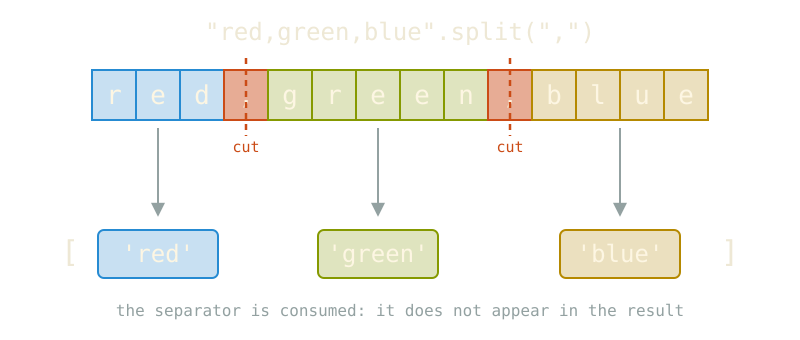

Real data rarely arrives in the shape we need
"2026-10-29 ERROR disk full""Milan,1.4,Italy""ciao a tutti, buona giornata""data/raw/channel_01.json"Splitting turns one string into a list of pieces we can count, filter and analyse.
Python variables (later, objects) come with built-in functions attached.
now variable_name.method_name(parameters) works
mystring.split()['To', 'be', 'or', 'not', 'to', 'be']split() returns a list of strings
by default, we split on white spaces
the original string is not modified (strings are immutable)
White spaces are gone!
['Two households', ' both alike in dignity', '\n In fair Verona', ' where we lay our scene', '']Commas are gone

separators are cut out
.split()| parameter | meaning | default |
|---|---|---|
sep |
the delimiter to cut on | None (whitespace) |
maxsplit |
maximum number of cuts | -1 (no limit) |
Find the .doc file and make it a .docx file
the file name is the last element of the path
chop off the .doc and replace it
.join methodDual to .split, with a funny syntax
the firstthe secondand the thirdto be or not to be| channel | name | year |
|---|---|---|
| it_news/2026 | it_news | 2026 |
| it_sport/2025 | it_sport | 2025 |
expand=True turns the pieces into columns.
Slice a list into chunks of size n:
split goes from text to list, join does the opposite
split(" ") and split() behave differently
split does not change the original string
deploy strip() when lines carry trailing spaces or newlines
[for CSV files use specific line parsers in csv or pandas]